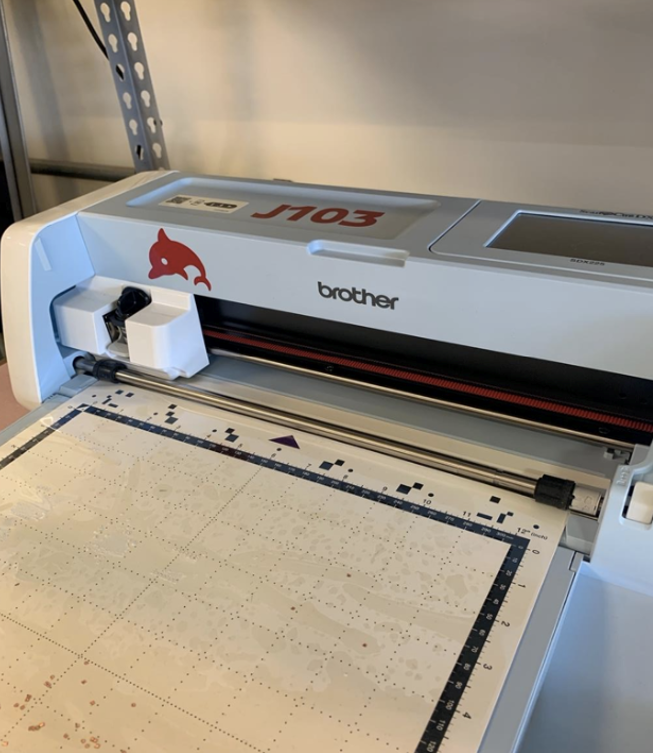
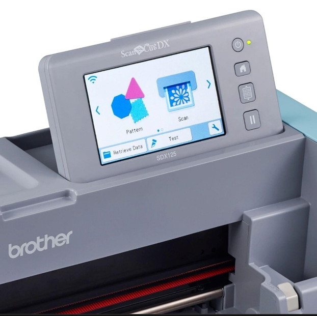

5. Cortadora de Vinil
Introducción
En este proyecto, buscamos aprovechar la cortadora de vinil como una herramienta alternativa para fabricar PCB flexibles, reemplazando el vinil por cinta de cobre. La idea es desarrollar un proceso de prototipado rápido, donde el diseño del circuito se prepara digitalmente y la máquina corta directamente las pistas sobre el material conductor. Aunque el método requiere ajustes y aún está en fase experimental, tiene potencial para crear circuitos simples, económicos y flexibles sin necesidad de procesos químicos o de grabado tradicionales.
Preparación de archivos en Kicad
A diferencia de un proceso de fresado, la cortadora de vinil sigue líneas vectoriales y está diseñada para seguir líneas. Por ello, fue necesario invertir la lógica del diseño para que la máquina cortara el material de aislamiento entre las pistas, que es precisamente el cobre que queremos remover. Si se exporta el diseño normal, cortaría las pistas como líneas, haciendo inviable el circuito. Para tener el archivo correcto hay que editarlo desde KiCad. Se selcciona “Draw Filled Zones” en el panel de herramientas. Se da click en cada esquina de la placa para cubrir todas las pistas y componentes y al final se da doble click. Automáticamente, KiCad calcula y rellena toda el área, si esto no pasa hay que oprimir la tecla B.Parametros
• Layer: F.Cu (capa frontal de cobre)
• Net:
Para guardar el archivo hay que ir a Salidas de Fabricación y luego Trazado, se selecciona el formato SVG y se selecciona solo la capa de cobre con la zona rellena. Es muy importante seleccionar “Trazado invertido” y “Fit to page board”, después se da click en “Trazar” y automáticamente se guarda el archivo.
Preparación del tapete y material
SPara el uso de la cortadora lo primero es preparar el tapete y material. La cinta de cobre no se comporta como vinil normal porque es metálica, delgada y sin rigidez. Para que no se mueva, se pone pegamento extra en la cama adhesiva, luego una capa de vinil de sacrificio, y encima la cinta de cobre. Es importante que no haya material sobre los bordes negros del tapete porque interfiere con el mecanismo de carga.
figure class="mb-4">Configuración de Parámetros
El tapete se tiene que limpiar con alcohol antes y después de cada uso. Si no, se acumula adhesivo y residuos de cobre que arruinan la planitud de la superficie y afectan cortes futuros. La fecha del tapete debe señalar hacia adentro de la máquina cuando se coloca en ella.
Proceso de corte
Para el proceso de corte se prepara el archivo SVG y se carga desde una USB y se selecciona la opción “Retrieve Data” y luego “Buscar dentro de USB” para acceder a los archivos compatibles (PHX, PHC, FCM, PES, SVG). figure class="mb-4">
Se posiciona el diseño en la cuadrícula donde había material confirmado. Antes de hacer el corte completo, se recomienda hacer una prueba en una esquina pequeña para verificar presión y profundidad sin arruinar toda la pieza..
Configuración de parámetros
Para la configuración, algunos compañeros realizaron distintas pruebas para poder obtener configuraciones que dieron resultados decentes. Nuestras medidas utilizadas fueron las siguientes:
• Velocidad de corte: 1 • Presión de corte: -9 • Presión manual: -1 • Cut amount: auto • Half cut: On • Presión half cut: -1
Se observaron algunos desafíos como una rotura en la máquina que requirió mantener manualmente el cabezal durante el proceso de corte, lo que seguramente causó inconsistencias fundamentales en la profundidad y uniformidad del corte. Usar cortadora de vinil para PCBs flexibles es una alternativa interesante para prototipado rápido, pero todavía hay cosas que se pueden hacer para mejorar.
Se posiciona el diseño en la cuadrícula donde había material confirmado. Antes de hacer el corte completo, se recomienda hacer una prueba en una esquina pequeña para verificar presión y profundidad sin arruinar toda la pieza..